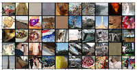
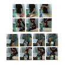

|
Research
I am interested in developing reliable machine learning algorithms with a focus on meta-learning and reinforcement learning.
|
|

|
ARM: A Meta-Learning Approach for Tackling Group Shift
Marvin Zhang*,
Henrik Marklund*,
Nikita Dhawan*,
Sergey Levine,
Chelsea Finn
under review at ICLR, 2020
website /
arXiv
Machine learning systems are regularly tested under distribution shift, in real-life applications. In this work, we consider the setting where
the training data are structured into groups and test time shifts correspond to changes in the group distribution. We propose to use ideas from
meta-learning to learn models that are adaptable, and introduce the framework of adaptive risk minimization (ARM), a formalization of this setting.
|
|

|
AVID: Learning Multi-Stage Tasks via Pixel-Level Translation of Human Videos
Laura Smith,
Nikita Dhawan,
Marvin Zhang,
Pieter Abbeel,
Sergey Levine,
RSS, 2020
website /
arXiv /
blog
Humans can learn from watching others, imagining how they would perform the task themselves, and then practicing on their own.
Can robots do the same? We adopt a similar strategy of imagination and practice in this project to solve complex, long-horizon tasks,
like operating a coffee machine or getting objects from within a closed drawer.
|
|
{kind=link}